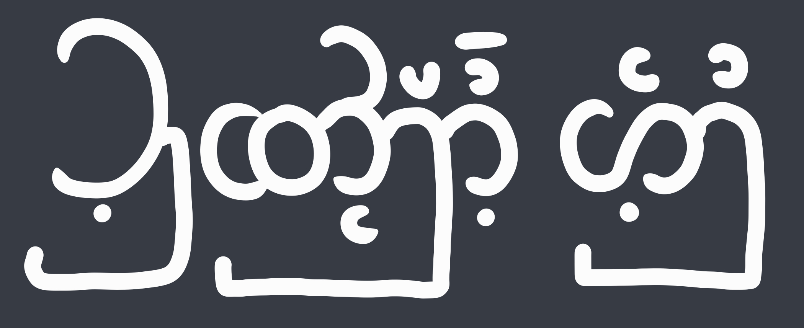
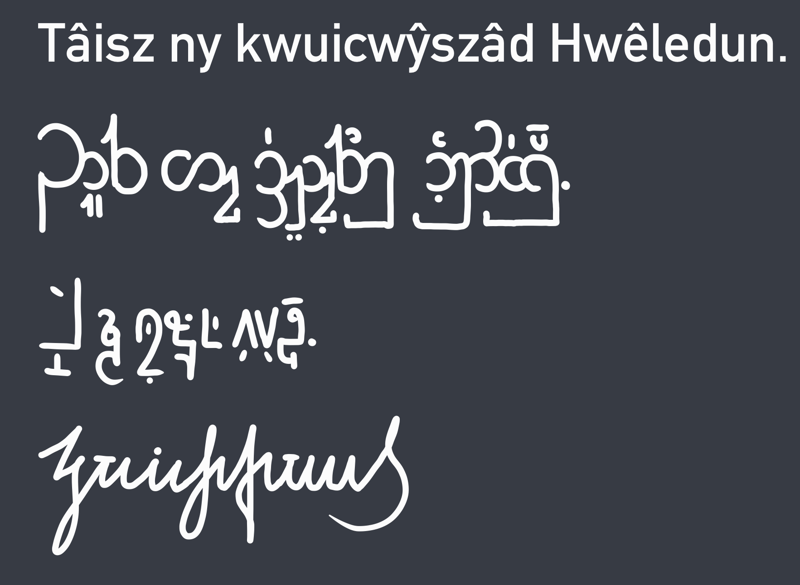

Hwêledu language
sometimes: Hwêleducân cnêdâ
[ˈʰweˑlɛðyˌcaˈɲːeða]
"Hwêleducân cnêdâ" written in the standard Hwêledu script.
Geographic distribution
Regions
Hwêleducâ
Cwêdancâ region (Thīrachta)
Qâvnéțińkạnțóř region (Kymýșa)
Number of speakers
| Hwêleducâ | 20.4 million |
| Cwêdancâ | 4.84 million |
| Qâvnéțińkạnțóř | 3.91 million |
| Total | 29.2 million |
|---|
Classification
Ilytharian
└ Continental Ilytharian
└ East Continental Ilytharian
Possible language codes
ISO 639-1
HW
ISO 639-3
HWE
Hwêledu ['ʰweˑlɛðy] is an East Ilytharian language spoken in Hwêleducâ. It is the official language there, as well as recognized minority language in Csiakalésza, Kymýșa and the autonomous Kımyčta region. It is often said that Hwêledu has the simplest grammar out of all Ilytharian languages.
Classification:
Hwêledu diverged from Csiakalász at around 510 AD. It lost all uvular consonants, as well as palatal plosives. Later, in the time of Old Hwêledu, palatal plosives were regained through a shift from /t d/ to /c ɟ/. Consequently, there are no alveolar plosives in native Hwêledu words. It is also notable that Hwêledu has lost the least vowels when evolving from Proto-Ilytharian. There are 16 vowels present in the language, with no length or stress distinction whatsoever.
There is not many dialects of the Hwêledu language. Although there is no vowel length distinction, Cwêda region speakers tend to realize /ɨ ʊ ɯ ɘ ɛ œ ɔ ɒ/ as short vowels and /i y u e ø o æ a/ as long vowels, with a long-to-short vowel ratio of approximately 1.8:1.
Northern Hwêledu speakers also sometimes realize /c ɟ/ as /ʈ ɖ/.
Hwêledu's phonology is a rather unique one for Ilytharian standards. It lacks uvular and alveolar plosives, which all other Ilytharian languages have. It is also one of only two languages that differentiates between the voiced and voiceless variant of the glottal fricative.
| IPA | Labial | Dental | Alveolar | Palatal | Velar | Glottal |
|---|---|---|---|---|---|---|
| Plosive | p b | (t d)¹ | c ɟ | k g | ||
| Labialized Plosive | cʷ ɟʷ | kʷ gʷ | ||||
| Nasal | m | n | ɲ | ŋ | ||
| Fricative | f v | θ ð | s z | ʃ ʒ ~ ɕ ʑ | ɣ ~ x | h ɦ |
| Approximant | w ʰw | l | j | |||
| Trill | r |
Since Hwêledu's orthography is rarely irregular but uses a lot of symbols that don't match the IPA symbol for that sound, there is a second phonology table denoting how to write the sounds.
| Written | Labial | Dental | Alveolar | Palatal | Velar | Glottal |
|---|---|---|---|---|---|---|
| Plosive | p b | (tt dd)¹ | c cg | k g | ||
| Labialized Plosive | cw cgw | kw gw | ||||
| Nasal | m | n | cn | ng | ||
| Fricative | f v | t d | sz z | s zh/ʒ² | c'h | th dh |
| Approximant | uw hw | l | j | |||
| Trill | r |
¹ The alveolar plosives /t d/ are rarely ever found in loanwords such as "Ttrâmâ" /trämä/ (tram, street car). Currently, only two words using /t d/ exist in the Hwêledu language.
² Traditionally, Hwêledu uses the Ezh letter to denote the /ʒ/ sound. More recently, there has been a debate to whether or not one should change the orthography to ⟨zh⟩ to simplify typing on a typewriter or a computer. This debate was settled by accepting both orthographies.
This consonant inventory is one of the most unique out of all Ilytharian languages. The lack of alveolar and uvular plosives, no clear distinction between /ɣ/ and /x/, and distinction between voiced and voiceless glottal fricative are all very uncommon features for Ilytharian languages. Out of 8 Ilytharian languages, 7 have at least one uvular plosive, 3 have both voiceless and voiced uvular plosive, and 7 have alveolar plosives. Hwêledu is one of only two languages to have distinction between voiced and voiceless glottal fricatives.
| IPA | Front | Mid | Back |
|---|---|---|---|
| Close | i y | ɨ | ɯ u ʊ |
| Close-Mid | e ø | ə | o |
| Open-Mid | ɛ œ æ | ɔ | |
| Open | a | ɒ |
| Written | Front | Mid | Back |
|---|---|---|---|
| Close | i u | ŷ | ui û ue |
| Close-Mid | ê ŵ | y | ô |
| Open-Mid | e w ai | o | |
| Open | â | a |
"a" is always pronounced /ɒ/, except when:
where it is pronounced /a/.
¹ "a" and "ja" can be spelt both as "â jâ" and "a ja". The two spellings are interchangeable.
The orthography can sometimes lead to ambiguities in pronunciation. For example, as "cw" is always pronounced /cʷ/, there would be no unambiguous way of writing /cœ/ *⟨cw⟩. Therefore, the apostrophe is used to avoid such cases: /cœ/ would be written as ⟨c'w⟩, the apostrophe signifying that "w" is not part of a digraph, but a vowel.
In older texts, one might find /cœ/ and similar ambiguous cases written as ⟨cẅ⟩. At the time when the Latin alphabet was introduced to Hwêledu, it was common practice to use the diaeresis to denote it not being part of a digraph, similar to how other language use the diaeresis above a vowel to denote it not being part of a diphthong (cf. "naïve"). This convention shifted towards using an apostrophe instead of a diaeresis for ease of writing.
Vowels can be nasalized when before "n", sometimes resulting in "n" not being pronounced.
Example: "tânâ" can be [θã.a], [θãna] or [θana]. This does not apply to i, y, ŷ and ui. (Exception: In the "âi" vowel, the i can be nasalized: "âin" [ain], [aĩn] or [ãĩn])
Vowel nasalization can be enforced through use of the letter ñ. It nasalizes the preceding vowel, with the exception of i and ui, which can never be nasalized.
Vowel nasalization can also be prevented through use of an apostrophe: while "tânâ" can have the first â nasalized, "tâ'nâ" is always /θana/.
This can create constructions like "lŷñn" (sometimes "lŷñ'n", translation: "I have my ...") /lɨ̃.n̩/ (Cwêda: [ˈl̻ɨ̃.ə̥n̩]), where ŷ has forced nasalization through ñ, and the other n being a syllabic n as there are no more vowels in the word.
Although geminated consonants are not phonemic, they sometimes occur when attaching prefixes to a word, most commonly the negation marker "w(t)-". If the negation prefix is placed in front of a word that starts with "t", then one t is omitted, e.g. "tâinâ" → "wtâinâ", while the "t" becomes a geminated consonant in most dialects, most notably the Cwêda and Qâvnéțińkạnțóř dialects. It does not matter whether "t" is pronounced as a geminated consonant or not, therefore it is not written down.
Currently, 4 main writing systems are in use:
The latin script is the third script to be introduced to the Hwêledu language. It was officially adopted as a main writing system around 550 AD.
The standard Hwêledu script (Bailcwŷszâ) is the original abugida writing system of the language. The oldest writing dates back to c.960 BC.
Quickscript is a syllabary script that has been invented in 1674 by a scholar from Cwêda. It was adopted as an official writing system in 1678 and has been in use ever since due to its compactness, ease of writing and speed; on average, one Quickscript character equals 3.1 Bailcwŷszâ letters (4.7 Latin letters).
The cursive script is a featural script and the second oldest writing system. It is not only used by Hwêledu, but by all Ilytharian languages. Most of the time, it is used for ceremonial purposes, but sometimes also on other occasions.
Below is a sample sentence in Latin, Bailcwŷszâ, Vaiʒcwŷszâ and Cnyʒvcwŷszâ.
The image contains an example sentence
in all of the 4 scripts. Line 1: Latin,
line 2: Bailcwŷszâ, line 3: Vaiʒcwŷszâ, line 4: Cnyʒvcwŷszâ.
Please note that due to spatial constraints, the Cnyʒvcwŷszâ
sample only contains the first word of the sentence.
Sadly, I haven't been able to make fonts for the scripts yet.
Translation: These are the 4 scripts of Hwêledu.
This is another sample of the Cnyʒvcwŷszâ script in its traditional form, written with a brush pen.
Transliteration: "Cwûthair", Translation: "I need more sleep".
The phrase "I need more sleep" is a very well-known aphorism in the Hwêledu language and culture. It symbolizes tranquility as the most important goal in life.
Hwêledu's grammar is relatively simple compared to other Ilytharian languages, but can still condense a lot of information.
Nouns, verbs, adjectives and adverbs all follow the same type of grammar. Their basic form is composed of the stem and an ending vowel (the last vowel in the word). This ending vowel can be changed according to the quality and number of the word. Below is a table of all possible ending vowels.
| Group | Singular | Plural |
|---|---|---|
| Default | â | a |
| Small/short | ê | e |
| Part | i | ŷ |
| Big/long | ô | o |
| Collection | û | u |
| More | ai | y |
| Less | ŵ | w |
Example:
cwûthâ = sleep
cwûthô = long sleep
cwûthê = short sleep/nap
cwûthai = more sleep
Exception: If one forms the nominative plural of a noun, one does not change the ending vowel but agglutinate -d. Example: cwûthê = nap, cwûthêd = naps (not *cwûthe
!).
After the ending vowel has been attached, there are several suffixes that can denote the type of the word (noun, verb, adjective, adverb). Noun suffixes denote case; verb suffixes denote tense, mood and voice; adjective suffixes can denote degree of comparison and the adverb suffix denotes adverbs.
Case endings:
| Case | Ending |
|---|---|
| Nominative | Ø (plural: -d) |
| Accusative | -c |
| Genitive | -n |
| Inessive | -sz |
| Locative | -nsz |
| Allative | -szc |
| Instrumental | -k |
| Comitative | -g |
Note on the usage of the cases:
The inessive case describes a position inside of something, while the locative case describes a general position. Example: 1SG school.INESS means "I'm in the school", i.e. inside the building. In situations where the conversation happens at a place where it is obvious that it is not a school, it can also be used to convey a general "I visit school". The locative case, on the other hand, only describes a location. 1SG school.LOC means one is at the school, not necessarily inside the building.
Verbs are conjugated according to the following pattern:
Verb root → Simple OR Complex mood/tense suffix → (Optional) Mood suffix → (Optional) Passive suffix
Simple mood/tense conjugation:
A verb is by default non-past (present/future). To change its tense to past, the last vowel is changed to its "Plural" variant. Then, one of three mood suffixes is attached.
| Mood | Suffix |
|---|---|
| Indicative | -m |
| Conditional | -lsz |
| Jussive | -l |
Complex mood/tense conjugation:
Once again, the variant of the ending vowel (whether it is the "Singular" or "Plural" variant) changes the tense. In the table below, S represents the "Singular" vowel and P the "Plural" vowel.
| Future | Indefinite future | Remote past | Recent past | |
|---|---|---|---|---|
| Indicative | -Src | -Srcg | -Prc | -Prcg |
| Conditional | -Srn | -Srsz | -Prn | -Prsz |
| Jussive | -Srv | -Srd | -Prv | -Prd |
Optional mood suffixes:
One of the following suffixes can be attached to the already conjugated verb. If the is indicative nonpast or indicative past (simple mood/tense conjugation), then the suffix replaces the "-m" indicative marker, and the "ue" vowel is deleted.
Passive
To make a verb passive, the suffix "-ui" is attached to the end of the already conjugated verb.
Adjective suffixes
Adverb suffixes
The vocabulary of Hwêledu is mostly derived from East Ilytharian, although there are a few loanwords present. Furthermore, anglicisms are frequently used.
A table with all current vocabulary can be found here. ⧉
(TODO: Swadesh list, numbers)
The third-person pronouns are by default epicene. Gender prefixes can be attached, but are rarely used.
| Person | Singular | Plural |
|---|---|---|
| 1. | Lŷ | Lâ |
| 2. | Tŷ | Tâ |
| 3. anim. | Szŷ | Szâ |
| 3. inan. | Nŷ | Nâ |
Note: All pronouns' vowels can also be spelled without a circumflex. The two spellings are interchangeable.
Masculine gender prefix: zue-
Feminine gender prefix: due-
Pronouns can take one of the following suffixes:
| Case/Function | Suffix |
|---|---|
| Accusative | -c |
| Possessive | -n |
| Dative | -d |
| Inessive¹ | -sz |
| Locative | -szt |
| Allative | -szc |
| Instrumental | -k |
| Comitative | -g |
| Double Possessive² | -ñn / -ñ'n |
| Adjective³ | -c'h |
Note: These case endings mostly are the same as for regular nouns. However, the ending -d is used for dative case instead of marking plural. Furthermore, the double possessive does not exist as a suffix for regular nouns.
1 The inessive suffix doubles as an interessive suffix when used with a plural pronoun. E.g. Tasz = between you(pl), among you(pl).
2 The double possessive translates as "x has their (own) ...". E.g. "Lŷñn c'hâiʒâ âmuin nŷc." 1sg-DOUBLE_POSS manner do-NMZ-POSS 3sg.inan-ACC "I have my own way of doing this."
3 The adjective translates as "like ...". E.g. "Szâ cga'inszâzhâydh lŷc'h." 3pl.anim look_like-VOL 1sg-ADJ "They want to look like me."
| Category | DEM | DIST | PROX | NEG | ALT | NEG.ALT | NDEF | INTERROG | UNIV | Noun | ||
|---|---|---|---|---|---|---|---|---|---|---|---|---|
| Marker | t- | sz- | z- | wt- | m- | wm- | - | cgw- | c- | c'h + -â | ||
| Universal | - | tâi | szâi | zâi | wtâi | mâi | wmâi | âi | cgwâi | câi | c'hâizâ | |
| Place | -sz | tâisz | szâisz | zâisz | wtâisz | mâisz | wmâisz | âisz | cgwâisz | câisz | c'hâiszâ | |
| Time | -m | tâim | szâim | zâim | wtâim | mâim | wmâim | âim | cgwâim | câim | c'hâimâ | |
| Person | -d | tâid | szâid | zâid | wtâid | mâid | wmâid | âid | cgwâid | câid | c'hâidâ | |
| Thing | -c | tâic | szâic | zâic | wtâic | mâic | wmâic | âic | cgwâic | câic | c'hâicâ | |
| Manner | -ʒ | tâiʒ | szâiʒ | zâiʒ | wtâiʒ | mâiʒ | wmâiʒ | âiʒ | cgwâiʒ | câiʒ | c'hâiʒâ | |
| Goal | -szc | tâiszc | szâiszc | zâiszc | wtâiszc | mâiszc | wmâiszc | âiszc | cgwâiszc | câiszc | c'hâiszcâ | |
| Source | -nsz | tâinsz | szâinsz | zâinsz | wtâinsz | mâinsz | wmâinsz | âinsz | cgwâinsz | câinsz | c'hâinszâ | |
| Reason | -l | tâil | szâil | zâil | wtâil | mâil | wmâil | âil | cgwâil | câil | c'hâilâ |
(See Vocabulary/E17 ⧉)
Numbers follow a typically Ilytharian system. Digits are assigned one consonant and one vowel each, and by combining consonant and vowel morphemes alternatingly, one spells out a number by its digits. A number always starts with ŷ-; if a number ends in a consonant, -â is agglutinated, if not, -ʒvâ is agglutinated.
| Function | Consonant | Vowel |
|---|---|---|
| 0 | s | a |
| 1 | th | i |
| 2 | l | u |
| 3 | z | ŷ |
| 4 | kw | ui |
| 5 | sz | û |
| 6 | v | e |
| 7 | cgw | w |
| 8 | ʒ | ô |
| 9 | gw | ŵ |
| 00 | t | o |
| 000 | n | ue |
| 000'000 | c'h | ai |
| null | ʒv | â |
| Decimal dot | b | ê |
Note: The 00, 000, and 000'000 functions stand for the respective amount of zeroes in the number and are used instead of repeating the zero morpheme. The null function represents nothing. The decimal dot is used like a regular decimal dot would be, allowing for non-integers.
Examples:
42 = ŷkwuʒvâ
16384 = ŷthezôkwâ
3.142 = ŷzêthuilâ
3,590,000,002 = ŷzûgwailâ
Single-digit numbers are by default written as ŷthâ, ŷlâ, ŷzâ etc. When not used as a standalone word but in agglutination elsewhere (e.g. specifying amounts of a noun), only single-digit numbers can be used. Every number has a specific morpheme for agglutination:
| Number | 0 | 1 | 2 | 3 | 4 | 5 | 6 | 7 | 8 | 9 |
|---|---|---|---|---|---|---|---|---|---|---|
| Morpheme | sa(n) | thâ | lê(n) | zai | kwui | szŷ(n) | vw | cgwy | ʒû(n) | gwi |
These suffix by default do not differentiate between cardinal and ordinal numbers, as it is being specified in the number of the noun: kwuiʒâ = fourth day (singular noun = ordinal); kwuiʒâd = four days (plural noun = cardinal). The number 1 also makes a noun plural when used as a cardinal suffix: thâʒâ = first day; thâʒâd = one day, literally meaning "one days". This persists when the number is separated from the noun: 1 câʒâd; ŷthâ câʒâd. Whenever a cardinal number is specified for a noun, the noun is plural.
Whenever a morpheme contains (n), it sometimes places it as an epenthetic n between the number and the original word. Examples (using the days of the week):
| Day | Translation |
|---|---|
| Monday | Thâʒâ |
| Tuesday | Lênʒâ |
| Wednesday | Zaiʒâ |
| Thursday | Kwuiʒâ |
| Friday | Szŷnʒâ |
| Saturday | Vwʒâ |
| Sunday | Cgwyʒâ |
The days of the week are translated as just the number of the day and the second syllable of the word "day" (câʒâ).
Time (as in time of the day in hours, minutes and seconds) is normally written with a centered dot as a separator: 12·34·56 or 12·34 instead of 12:34:56 or 12:34. It is pronounced as written, with the centered dot pronounced as if it were a decimal dot, but with the suffix -kôr attached to the final number: 12·34·56 = ŷthubŷkwêszeʒvâkôr and 12·34 = ŷthubŷkwâkôr. Expressions like "half past" and "quarter past" have been in use a long time ago, but nowadays are only to be found in old texts.